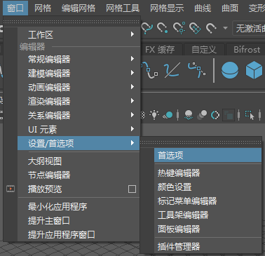
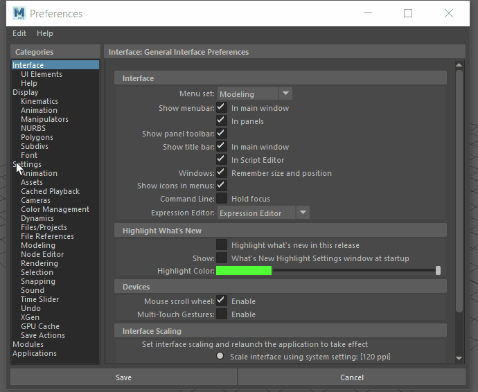

Maya 的默认度量单位为公制（厘米、毫米），但您可以在
“设置”(Settings)首选项
的“工作单位”(Working Units)部分将其设置为英制（英寸、英尺）。
注：
可以更改 Maya 中的默认工作单位（公制单位），但是建议将它们保持不变，因为 Maya 中的一些工具具有固定的类型，例如，在 Nucleus 和 Bifrost 中 1 单位 = 1 米，而不管设置如何。相反，不要更改 Maya 的默认工作单位，并调整您的栅格，使之与您所处理的项目的比例保持一致。有关如何更改栅格以适应按不同比例工作的信息，请参见在 Maya 中使用不同比例。
更改 Maya 的默认度量单位
- 在 Maya 菜单栏中，转到“窗口 > 设置/首选项 > 首选项”(Window > Settings/Preferences > Preferences)。

- 在“设置”(Settings)类别中，找到“工作单位”(Working Units)。
- 在“线性”(Linear)下拉菜单中选择您的首选工作单位。
